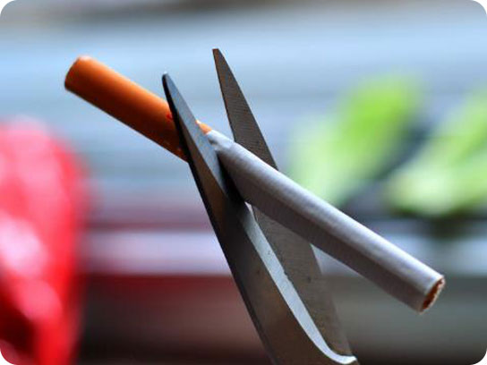

自20世纪50年代以来，全球范围内已有大量流行病学研究证实，吸烟是导致肺癌的首要危险因素。2016年5月31日是世界卫生组织发起的第29个世界无烟日。
为了进一步推进烟草制品素面包装措施在全球多地的实施，世界卫生组织计划将第29个世界无烟日的主题定为烟草制品的素面包装。
吸烟有害健康，在烟草的燃烧过程中，可以产生4000多种已知的化学物质，其中有69种致癌或促癌物质。

被动吸烟即俗称的“吸二手烟”，不吸烟者每日被动吸烟15分钟以上者定为被动吸烟，又称“强迫吸烟”或“间接吸烟”。在日常生活中绝大多数人不可能完全避免接触烟雾，因而成为被动吸烟者。当吸烟危害吸烟者本身健康的同时，二手烟也影响非吸烟者。
将你的分数记录下来，对比最后结果各分值所代表的依赖水平。
- 1、起床后多长时间吸第一支烟?
- 5分钟以内 (3分)
- 6-30分钟 (2分)
- 31-60分钟(1分)
- 1小时以上 (0分)
- 2、在禁烟的公共场所，如教室、图书馆、电影院等，你会不会因为不能吸烟而感到难熬?
- 会 (1分)
- 不会(0分)
- 3、戒烟时令你最头痛的是哪一支烟?
- 起床后第一支烟(1分)
- 其他(0分)
- 4、你每天的吸烟量是多少?
- 少于10支(0分)
- 11-20支 (1分)
- 21-30支 (2分)
- 31支以上(3分)
- 5、起床后1小时内吸烟是否比在其他时间更频繁一些?
- 是(1分)
- 否(0分)
- 6、你生病卧床时是否还吸烟?
- 是(1分)
- 否(0分)
6分以上：以生理成瘾为主，光靠毅力戒烟是不行的，必须配合其他一些方法。世界卫生组织推荐尼古丁替代疗法。
其原理是给戒烟者使用微量含尼古丁的产品，如口香糖、鼻腔喷雾剂或贴皮膏等，来缓解戒烟过程中出现的易怒、失眠、焦虑等戒断症状。最终达到戒烟目的。成功率是常规方法的2倍。
6分以下：
以心理成瘾为主，以行为治疗为主。下列方法可以尝试。
以自己的毅力坚守戒烟诺言，避开香烟的引诱；拒绝别人的香烟；以其他活动（如运动、深呼吸、散步等）转移自己对香烟的向往。这类烟民也会出现尼古丁戒断症状，如烦躁不定、情绪不稳、沮丧、注意力不集中、睡眠障碍等。
20分钟以后
心率和血压会降低
12小时以后
血液里的一氧化碳浓度恢复正常值
2-12周以后
循环系统和肺功能会得到改善
1-9个月以后
咳嗽与气促将有所缓和
1年以后
患冠心病的几率将只有吸烟者的一半
5-15年以后
中风的危险会降到不吸烟者的程度
10年以后
患肺癌的危险会降至吸烟者的一半左右，发生其他癌变的危险会降低
15年以后
发生冠心病的危险等同于非吸烟者
不要让生命随烟而逝
请呵护健康的肺
扫描二维码下载智慧北京客户端
了解更多精彩资讯